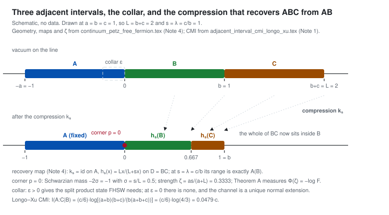

Module 1 — Geometry and the recovery map
Three adjacent intervals on the chiral light ray. Everything the recovery error can depend on is one cross ratio, so moving the four endpoints moves exactly one number — and the conditional mutual information moves with it.
For A = (−a, 0), B = (0, b), C = (b, b+c) in the vacuum of a chiral net of central charge ccft, I(A:C|B) = (ccft/6) log[(a+b)(b+c)/(b(a+b+c))] = (ccft/6) log(1+z) = −(ccft/6) log η. It is finite, and positive because (a+b)(b+c) − b(a+b+c) = ac > 0.
Where this comes from: claim page · paper1/sec_setting.tex:85 · adjacent_interval_cmi_longo_xu.tex
Every rotated Petz map of the inclusion glues with the identity on A and acts on the one-particle space as the half-density push-forward of the parabolic map that fixes A pointwise and pushes the right endpoint L = b+c to L/(1+s), with s ∈ [λ, 2λ], λ = c/b. There is no collar and no global diffeomorphism.
Where this comes from: claim page · paper1/sec_petz.tex · continuum_petz_free_fermion.tex
The same quantity is the defect in the data-processing inequality for tracing out C, which is what makes the recovery error its natural quantitative companion: the CMI says the chain is not Markov, the recovery error says by how much.
Where this comes from: claim page · cmi_as_quantum_markov_defect.tex
The four cross-ratio variables
All four are Möbius invariants of the same configuration, and the conventions are fixed once in the symbol table and in paper1/app_conventions.tex:85:
| symbol | value | what it is |
|---|---|---|
| η | b(a+b+c) / ((a+b)(b+c)) | the cross ratio of Note 1; the CMI is −(c/6) log η |
| z | 1/η − 1 = ac / (b(a+b+c)) | the geometric variable of the compression |
| ηV | 1 − η = z/(1+z) | the cross ratio of Vardhan–Wei–Zou |
| ζ | as / (a+L) | the recovery variable; 1+ζ is the cross ratio of Js inside I |
For the ordinary Petz map ζ = 2z; for the rotated map ζt = z(1+e−2πt); for the pure geometric compression ζ = z.

The map itself
The identity on A, parabolic on BC, C¹ across the junction: the derivative is 1 on both sides and only the second derivative jumps. That jump is the Schwarzian point mass −2σ that module 6 accumulates along a chain.
What this module does not show
The value of the recovery error itself: that is module 2, where Φ(ζ) is a measured curve rather than a closed form. Everything on this page is a closed form evaluated in your browser.